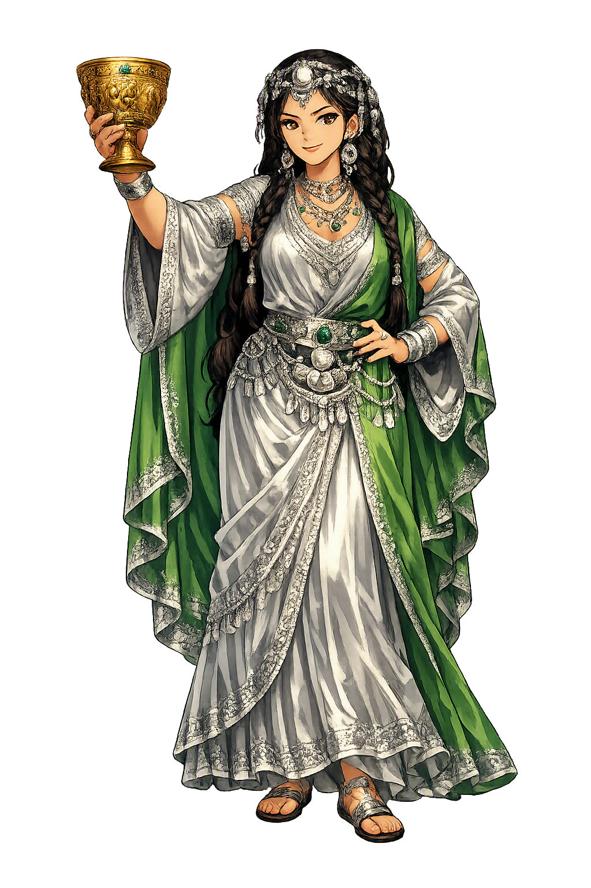

The Living Myth
Wild Animals, Hunt · The goddess who outwitted the dragon Illuyanka

Stories of Inaras
Inaras is best known from a single, brilliant episode, but that episode reveals a goddess of cunning, sovereignty over animals, and alliance between divine and mortal — and the text that tells it belongs to one of the oldest dragon-fights in the Indo-European world. Her myths survive on a handful of clay tablets and in the spring festival that kept them alive.
After the storm-god Tarḫunash is defeated by the dragon Illuyanka, it is Inaras who acts. She prepares an enormous feast — beer, wine, and every kind of food laid out by a spring — and goes to the mortal Ḫupašiya with a bargain: help me trap the dragon, and I will sleep with you. Ḫupašiya agrees. The dragon and his children come to the feast, eat and drink until they cannot fit back into their hole, and lie helpless; Ḫupašiya binds them, and Tarḫunash destroys them (CTH 321; Hoffner, Hittite Myths, 2nd ed.). The Hittite composition is linguistically old, and the scene has the feel of high archaic storytelling. Its surprise is the weapon: the dragon dies not of thunder but of appetite — the Mistress of Animals wins with hospitality sharpened into a trap, and the storm-god she saves never even appears at the feast.
The sequel is darker. Inaras warns Ḫupašiya not to look out the window while she is away on the gods' business; he looks, sees his wife and children, is overcome, and flees. The goddess hunts him down and kills him, and the story ends — as Hittite myths of this kind characteristically end — with the founding of a cult: offerings in memory of Ḫupašiya, so that the mortal helper who made the victory possible would not be forgotten (CTH 321). The text is bound to the Purulli, the spring festival of the storm-god, in whose ritual calendar the dragon's defeat was annually renewed. The mortal's fate is the myth's price-tag: divine bargains in Hatti are paid in full, and the helper who looks back loses everything — except a cult, which is immortality of a strictly Hittite kind.
Behind the single great story stands a goddess of the steppe. Inaras is the Mistress of Animals: the deity who owns the wild herds — gazelle and deer above all — and the open grassland beyond Hatti's fields. Her name may be Hattic or an older substrate survival rather than Indo-European Hittite, which suggests she was worshipped in the mountains before the Hittite language arrived; the tradition itself remembers her as older than the storm-god's order. In a kingdom where the royal hunt was liturgy and the steppe was at once pantry and peril, the goddess who governed game governed survival itself. The single narrative that survives is therefore the tip of a cult: the one story the imperial scribes committed to clay happens to be the one in which the wilderness outwits chaos on the gods' behalf.
The Illuyanka myth exists in two versions, and the difference is instructive. In the first, the dragon is bound and killed outright. In the second, Tarḫunash needs the dragon back: he marries the dragon's daughter, engineers his own resurrection through her, and then — in the story's coldest passage — has his own son and the dragon's daughter killed as they return home. Hoffner judged the second version the fuller telling, and it belongs to the same festival world: the Purulli rites of spring (Hoffner, 'The Hittite Myth of Illuyankas,' JAOS 82, 1962). Inaras does not appear in the second version at all. Myth here is charter: the texts exist to explain why the festival exists, and the festival keeps the story alive — while the goddess who stars in one telling can vanish from the other without anyone asking where she went.
Wild Animals · Hunt · Steppe
Inaras is the Hittite Mistress of Animals — goddess of the wild herds and open steppe — and the architect of the gods' most famous victory. When the storm-god lay defeated by the dragon Illuyanka, it was Inaras who set the trap, recruited a mortal ally, and fed the dragon to his own appetite: cunning, sovereignty over the wild, and an alliance across the divine-mortal boundary in a single story.
She rules the wild herds and the creatures of the steppe.
She devises the feast that lures the dragon Illuyanka to his doom.
Her home is the open grassland, not the palace or the temple.
She knows the ways of animals and the arts of the chase.
From the original script to the living URL
𒀭𒄿𒈾𒊏
The name in its original Hittite form. Inaras (𒀭𒄿𒈾𒊏) is attested in the source tradition — “Unknown”. Its original diacritics and script distinctions carry the full phonetic and orthographic weight of the source tradition.
inaras
The plain inaras form is identical to the Unicode restoration. Because this name is already written in Latin letters, no diacritics, stress, or script information were lost — only capitalization differs.
Inaras
The Unicode restoration does not need to recover lost marks for Inaras. Its value is canonical spelling and consistent cataloguing, not the reconstruction of erased orthography. The domain is readable as-is to both DNS and humanity.
Inaras.com
This restoration is written entirely in ASCII letters — no Punycode encoding stands between Inaras and the DNS. The domain reads identically to machines and to human eyes.
Owned, ideal, and ASCII forms of Inaras
Inaras
Restores 𒀭𒄿𒈾𒊏. The full Unicode restoration. inaras.com is not in the PuniCodex collection — it is watched for release; if it drops, this temple upgrades to an owned flagship.
How Inaras was spoken
How Inaras travels from ancient script to the modern URL
Inaras is the goddess of the edge: the place where the city ends and the steppe begins, where human craft meets animal instinct, and where cunning can defeat strength. Her story warns that even a dragon's power can be undone by appetite, and that the wild is not simply chaos but a realm with its own sovereign.
Enter Extended Lore